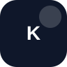
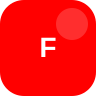
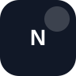

Hangi yapay zekâ aracı ne işe yarar?
Metin, görsel, video, ses, müzik, araştırma ve web sitesi için araçları; kullanım platformu, iş akışı, zorluk seviyesi ve resmî site bağlantısıyla birlikte incele.
Nasıl kullanılır?
Önce yapmak istediğin işi seç. Sonra araç paketinden akışı gör. En son ilgili prompt sayfasına geç.
Başlangıç için araç paketleri
Ziyaretçi tek tek araç seçmek yerine, yapmak istediği işe göre hazır kombinasyon görür.
Instagram Reels Paketi
Yüz göstermeden kısa video üretmek için başlangıç paketi.
Senaryo ChatGPT, kapak Canva, ses ElevenLabs, kurgu CapCut.
YouTube Shorts Paketi
Hızlı kısa video denemeleri için sade akış.
Önce konu test edilir; çalışan Shorts daha sonra uzun videoya çevrilir.
TikTok Video Paketi
Kısa, hızlı ve trend odaklı video üretimi.
TikTok için hızlı kanca, dikey kurgu ve altyazı önemlidir.
AI Video Paketi
Daha ileri seviye kısa sahne ve tanıtım videosu.
Önce kısa sahnelerle deneme yapılmalı; maliyet kontrol edilmeli.
Blog / SEO Paketi
Google’dan trafik almak için içerik üretim akışı.
Araştırma, yazı, görsel ve yayınlama adımları ayrılır.
Müzik / Jingle Paketi
Kısa tanıtım, intro veya sosyal medya sesi için.
Söz ve stil ChatGPT, müzik Suno/Udio, video montaj CapCut.
AI araçlarını filtrele
Kategoriye göre araçları süz. Logolar şimdilik yer tutucu ikonlardır; resmî logo dosyaları eklendiğinde aynı alanda görünecek.

ChatGPT
Fikir, metin, prompt, senaryo, kod, plan ve sayfa taslağı için ana üretim aracı.
Gemini
Google ekosistemiyle uyumlu fikir, araştırma, görsel destekli analiz ve alternatif metin üretimi.
Claude
Uzun metin, analiz, özet, rehber yazısı ve daha doğal metin düzenleme için güçlü araç.
Perplexity
Kaynaklı araştırma, konu tarama ve güncel bilgi kontrolü için kullanılır.

Canva
Sosyal medya postu, carousel, kapak, sunum, afiş, thumbnail ve web görseli üretimi.

CapCut
Reels, Shorts, TikTok, altyazı, kurgu, şablon ve kısa video düzenleme aracı.

ElevenLabs
AI seslendirme, metinden konuşma, anlatıcı sesi ve video sesleri için kullanılır.
Runway
AI video üretimi, görselden video, kısa sahne ve yaratıcı video denemeleri.
Pika
Kısa AI video ve hareketli sahne denemeleri için video üretim aracı.

Kling AI
Metinden/görselden video üretimi ve yaratıcı kısa sahne denemeleri.
Midjourney
Yüksek kaliteli AI görsel, konsept sanat, kapak ve sahne üretimi.
Ideogram
Yazı içeren görseller, logo fikirleri, poster ve tipografi denemeleri.
Leonardo AI
Karakter, ürün sahnesi, konsept tasarım ve sosyal medya görseli üretimi.

Adobe Firefly
Tasarım odaklı AI görsel, metin efekti ve yaratıcı üretim aracı.
Suno
AI müzik, jingle, kısa tema ve sosyal medya ses fikirleri üretimi.
Udio
AI müzik üretimi ve şarkı demo denemeleri için kullanılır.
Descript
Podcast, video metin düzenleme, ses temizleme ve içerik kurgusu.
HeyGen
Avatar video, sunum videosu, çok dilli video ve AI presenter üretimi.
Synthesia
Kurumsal avatar video, eğitim videosu ve anlatıcı video üretimi.
Gamma
AI sunum, doküman ve web sayfası taslakları üretir.

Notion AI
Not alma, doküman düzenleme, özetleme ve içerik üretim takibi.
Vercel
Web sitesi yayınlama, domain bağlama ve hızlı frontend hosting.
Hangi iş için hangi araç?
Hızlı karar vermek için en basit karşılaştırma.
| İş türü | Önerilen araçlar | Ne üretir? |
|---|---|---|
| Metin / fikir | ChatGPT, Claude, Gemini | Prompt, senaryo, açıklama, SEO taslağı |
| Instagram görsel | Canva, Ideogram, Leonardo AI | Carousel, kapak, post, görsel fikir |
| Kısa video kurgu | CapCut | Reels, Shorts, TikTok, altyazı, hızlı montaj |
| Seslendirme | ElevenLabs | Anlatıcı sesi, video sesi, kısa reklam metni |
| AI video sahnesi | Runway, Pika, Kling | Kısa sahne, ürün tanıtımı, görselden video |
| Müzik / jingle | Suno, Udio | Kısa tema, intro, jingle, müzik denemesi |
| Araştırma | Perplexity, Gemini | Kaynak kontrolü, konu araştırması, karşılaştırma |